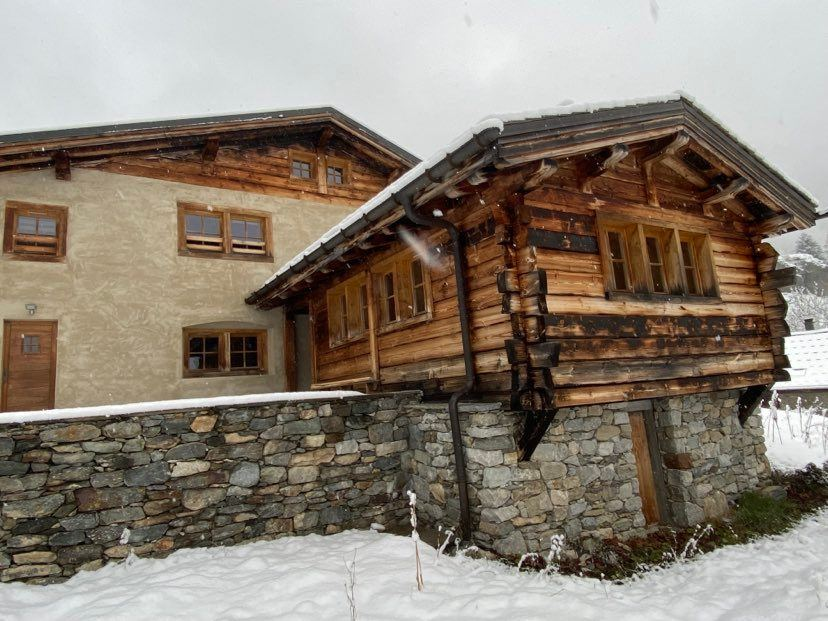
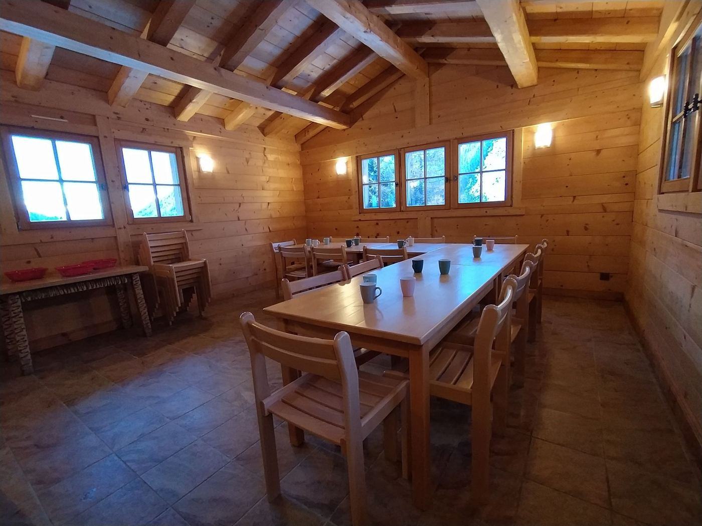
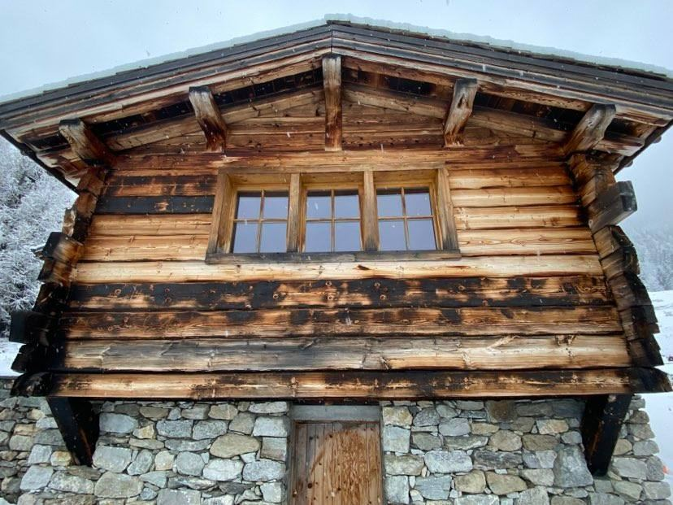
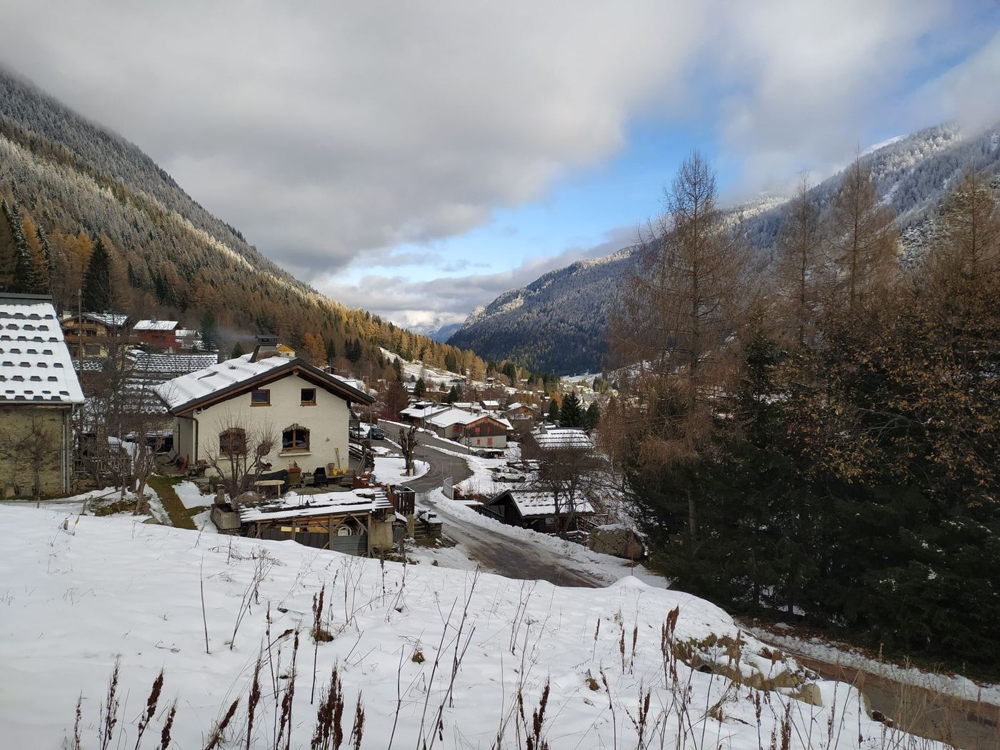
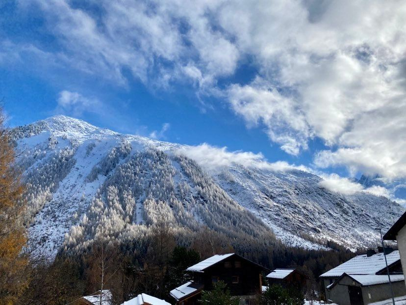
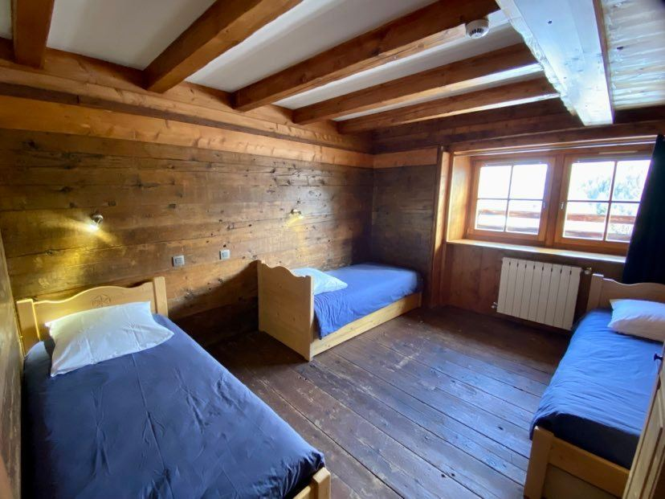
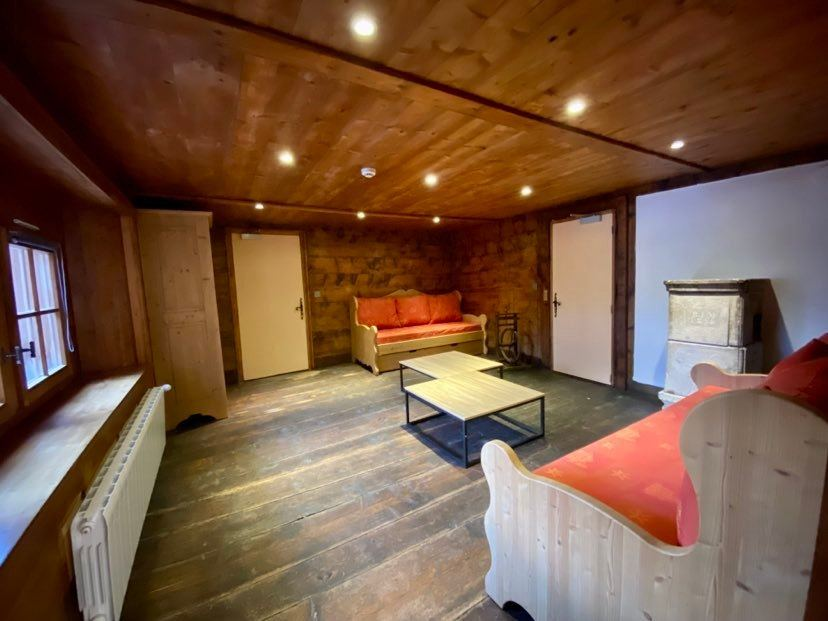

Deux journées de ski, un chalet pour nous quinze, et le soir une raclette.
Deux jours de ski
Samedi et dimanche sur les pistes de la vallée de Chamonix. Forfaits compris.
Un chalet pour nous
Le gîte La Loriaz est entièrement privatisé : 15 couchages, une cuisine, une grande table.
Les soirées
Raclette le samedi soir, jeux de société, on se retrouve au chaud.


Du vendredi soir au dimanche soir
On monte
Départ de Paris vers 17h-18h, en voitures. Arrivée au gîte entre 23h et 1h.
Première journée de glisse
Ski à Balme-Vallorcine, tout près du gîte. Le soir : raclette.
Deuxième journée, puis retour
Messe à Écône à 7h15, gîte libéré avant 10h, ski jusqu'à 16h30, retour direct vers Paris.
Les infos pratiques

Le gîte
Les lits, les pièces, ce qu'on apporte, comment y arriver.
Découvrir →
Le programme
Vendredi soir, samedi et dimanche, heure par heure. Les voitures et le trajet.
Voir le déroulé →
Les domaines
Où on skie samedi, où on skie dimanche, et pourquoi.
Choisir →
L'équipement
Vêtements, matériel de ski, affaires pour le gîte, la route en hiver.
Préparer sa valise →
Le budget
Gîte, voiture, repas, matériel : le coût par personne, simulé.
Calculer →Rejoins le groupe
Les places sont limitées : 15 couchages au gîte. Pour confirmer ta présence, rejoins le groupe WhatsApp, où on organise aussi les voitures.
Organisation : Joseph Boulangé